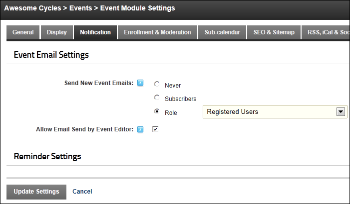

Configuring the Event Email Settings
How to configure the email settings of the Events module.
- Select Edit
 >
>  Edit Settings from the module actions menu - OR - Click the Edit Settings button (only visible if the Icon Bar is displayed). This displays the Event Module Settings page.
Edit Settings from the module actions menu - OR - Click the Edit Settings button (only visible if the Icon Bar is displayed). This displays the Event Module Settings page.
- Select the Notification tab.
- Expand the Event Email Settings section.
- At Send New Event Emails, select if and to whom email messages are sent when a new event is added:
- Never: Select to disable email messages.
- Subscribers: Select to enable users to subscribe for notification through the check box in the icon bar.
- Role: Select and then choose the required role. Users within the selected role will receive email notification when a new event is created.
- At Allow Email Send by Event Editor, to allow editors to send an event email to a role - OR - to disallow.
- Click the Update Settings link.

-
See "Subscribing to New Event Notifications"
-
See "Enabling/Disabling and Configuring an Event Reminder"